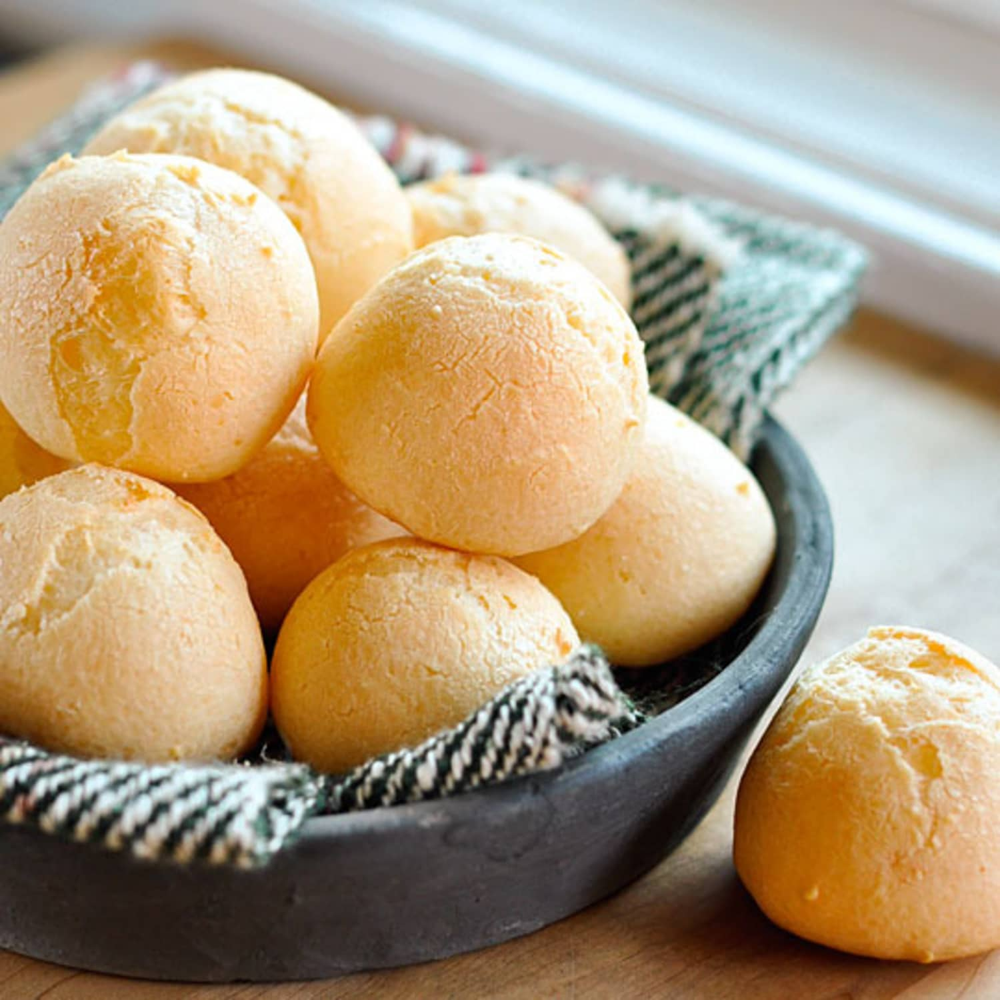

Pao de Queijo Recipe

Description
Pao de queijo (pronounced pow-du-KEHjo) is a Brazilian cheese roll typically
eaten as a snack or breakfast food. This recipe was originally bread rolls
made by soaking and peeling cassava root, with no cheese. It's current
iteration is a combination of cheese and cassava/tapioca flour.
Ingredients
- 1/2 cup olive oil or butter
- 1/3 cup water
- 1/3 cup milk or milk alternative
- 1 teaspoon salt
- 2 cups tapioca flour
- 2 teaspoons minced garlic
- 2/3 cup grate Parmesan cheese
- 2 eggs
Steps
- Preheat oven to 375 degrees F (190 degrees C).
-
Pour olive oil, water, milk, and salt into a large saucepan, and place
over high heat. When the mixture comes to a boil, remove from heat
immediately, and stir in tapioca flour and garlic until smooth. Set aside
to rest for 10 to 15 minutes.
-
Stir the cheese and egg into the tapioca mixture until well combined, the
mixture will be chunky like cottage cheese. Drop rounded, 1/4 cup-sized
balls of the mixture onto an ungreased baking sheet.
-
Bake in preheated oven until the tops are lightly browned, 15 to 20
minutes.
Sources